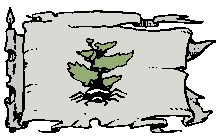

La marche d'Azilian
Histoire
En 1069 CV des marchands de Laelith partirent en exploration autour du lac des Hautes Eaux en quête d'une région tranquille où ils pourraient s'établir. Ils trouvèrent leur paradis au nord-est du lac et s'y installèrent. Des années plus tard, certains d'entre eux prirent conscience de l'exceptionnelle qualité du bois des forêts qui les entouraient et décidèrent de les exploiter. Bûcherons, menuisiers et autres artisans furent donc invités à venir s'installer sur ces terres et ainsi naquit cette nouvelle colonie laelithienne. La prospérité y régna de nombreuses années jusqu'en 1107 CV, année au cours de laquelle une spectaculaire nuée d'insectes voraces commença à ravager les forêts, risquant d'entraîner avec elle toute la colonie par ses conséquences désastreuses sur son économie. Les marchands se dépêchèrent d'essayer de trouver une solution afin d'éradiquer le mal et l'un d'eux, Azilian, proposa d'aller rencontrer les tribus barbares du nord dont on lui avait dit qu'elles élevaient des araignées géantes friandes d'insectes. Azilian entreprit donc un long voyage périlleux vers le nord, et après de longues négociations et le versement d'une somme considérable en bijoux, les barbares acceptèrent de lui vendre quelques araignées. Ces dernières comblèrent toutes les espérances et réussirent en quelques semaines seulement à éliminer tous les insectes. Azilian fut alors nommé à la tête de la colonie et en souvenir de son périple, celle-ci prit le nom de la Marche d'Azilian.
En 1144 CV, inquiet de l'ascension économique du royaume des Deux Lacs, les dirigeants de Calimshan parvinrent à soulever les tribus du désert des Marches du Couchant contre Laelith et son Roi-Dieu. La colonie de la Marche d'Azilian envoya alors un contingent d'araignées géantes appuyer les armées de la cité sainte. Celles-ci se comportèrent de manière exemplaire au combat et participèrent activement à la victoire du royaume contre les barbares du désert. Le Roi-Dieu décréta alors officiellement Azilian province autonome, en remerciement.
Géographie
Azilian est en grande partie recouvert de forêts, principalement sur toute sa moitié est. À l'ouest, le relief est montagneux, avec par exemple le col des Dragons Blancs qui culmine à 2500 mètres, à la frontière avec Olizya. Les trois principales rivières qui irriguent la province sont le Sahagun, qui coule à Azil, le Pisuega, qui passe près de Carh-pendh, et l'Oqar, qui sert de frontière avec Agramor. La capitale de la province est Azil.
Population
Un arachnien sur son araignée géante
La population d'Azilian compte environ 85% d'humains. Les fortes taxes que doivent payer les non-humains pour avoir le droit de s'établir en Azilian expliquent assurément ce chiffre. Les 15% restants se partagent entre une communauté d'elfes des bois vivant en marge de la société, et quelques humanoïdes à la peau noire de jais, les arachniens, descendants des tribus barbares du nord. Ceux-ci sont arrivés en Azilian en même temps que les premières araignées et en sont aujourd'hui les principaux dresseurs (battre une araignée géante en Azilian est passible de mort).
Villes principales. Azil (la capitale), Carh-pendh, Azond, Milbüch, Ozar, et environ 40 villages.
Population totale. 50 400 habitants (85% humains, 10% elfes des bois).
Cultes
De nombreux dieux sont vénérés en Azilian, mais le nom de la Marche est toutefois lié pour tous à celui de Sylvanus. C'est en effet dans les forêts de cette province que vivrait le grand maître des druides de Dderwydd Chymdeithas pour le royaume des Deux Lacs.
Politique
C'est le Conseil des 7 Marchands qui dirige aujourd'hui d'une main de fer la province d'Azilian. Ses membres sont les sept plus grosses fortunes de la Marche et élisent chaque année parmi eux le Vergobret, sorte de représentant et porte parole. Le conseil possède de nombreuses commissions gérant chacune un aspect de la vie courante de la province.
LE CONSEIL DES 7 MARCHANDS
Le conseil a un côté laïc très prononcé. Il voit d'un très mauvais œil la religion, qui détourne les hommes de leur tache principale : le travail. C'est pourquoi Azilian ne supporte officiellement aucun culte. Les marchands ont même pensé à interdire les temples sur leur sol, mais la proximité avec Laelith rend pour l'instant cette décision impossible. Et comment le peuple, fortement croyant lui, prendrait-il cela ?
Les habitants d'Azilian atteignant un certain niveau d'imposition reçoivent le titre de citoyen. Outre le fait de leur donner le droit d'exercer une activité commerciale et de posséder des biens immobiliers dans la province, ils obtiennent également le droit de participer à l'Assemblée Démocratique Permanente, qui peut soumettre au Conseil des projets de loi, des plans de réformes, etc. Mais dans les faits le Conseil ne prête que très rarement attention à cette assemblée. Vu de l'extérieur toutefois cela donne à Azilian un air de démocratie que l'on admire même hors de ses frontières et qui n'est pas pour déplaire au Conseil. Les non-citoyens, les gris, sont regroupés en Unités de Travail et d'Épanouissement (UTE) dirigées par des contremaîtres tyranniques. Et afin de surveiller le fonctionnement de tout cela et de s'assurer que tout le monde travaille sans trop se poser de questions, la province a créé les Services d'Encadrements et de Bienveillance Publique (SEBP), organismes qui regroupent la milice et la police secrète.
La Marche d'Azilian entretient de bons rapports avec toutes les provinces et se maintient à l'écart des problèmes entre provinces, car basant son succès sur le commerce, se priver d'un partenaire pourrait être problématique pour son économie. La Marche adopte donc une position neutre la plupart du temps. La réputation que s'est forgé son bataillon d'araignées géantes aide également à dissuader d'éventuels agresseurs. Cependant, bien qu'officiellement le Conseil ne s'autorise aucun commentaire sur la manière qu'ont ses voisins de gérer leurs provinces, les critiques en coulisses sont pourtant très dures, Azilian se considérant comme l'élite des provinces du royaume.
Économie
Le commerce est la clé du succès d'Azilian. Paraissant insensibles au mauvais temps et aux pirates des deux lacs, les navires de la Marche parcourent inlassablement les provinces et fréquentent tous les ports, principalement celui de Laelith bien sûr. Ses deux principales ressources sont le bois, dont le royaume se sert pour la construction de navires ou de boucliers de première catégorie, et le textile. Les vêtements réalisés avec le fil des araignées géantes sont à la mode dans la noblesse du royaume, et les voiles de bateaux tissées de la même manière sont réputées pour être les plus résistantes au monde.
En plus de l'élevage d'araignées pour le textile, Azilian (plus exactement les arachniens) élèvent également ces animaux pour les dresser aux combats. Mais le Conseil répugne à voir partir hors de ses frontières trop d'araignées, et a fixé des quotas très stricts. Agramor est le meilleur client d'Azilian en ce qui concerne cette activité. L'agriculture produite en Azilian suffit juste à ses besoins intérieurs et ne s'exporte donc quasiment pas.
Guide du routard
Les villages des arachniens au nord-ouest. Hommes ou araignées ?
Le chantier naval d'Azil. Le plus grand du royaume.
Les élevages d'araignées géantes au nord-ouest. Des centaines de ces créatures par ferme.
Écrit par blueace